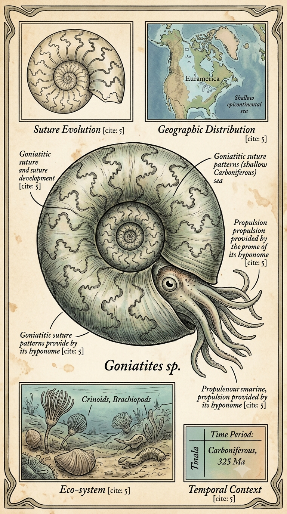
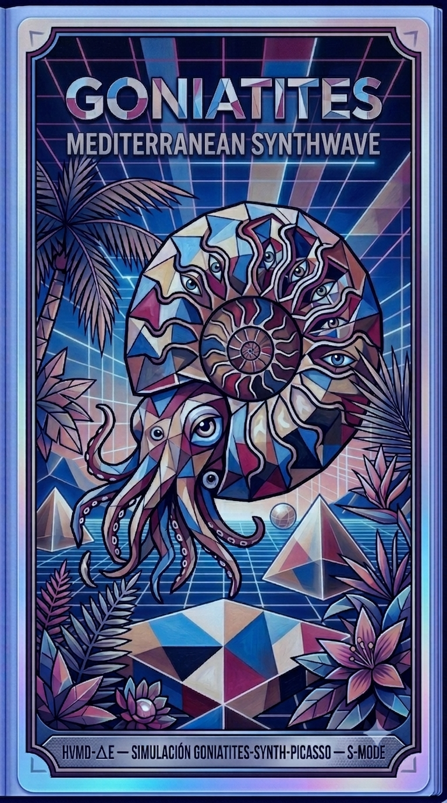

Paleoficha de Goniatites



Periodo: Carbonífero superior
Edad: Hace aproximadamente 320 millones de años.
Dieta: Carnívoro / Planctófago.
Distribución: Mares epicontinentales de la cuenca de Varisca.
TAXÓN:
Goniatites (Ammonoidea). Cefalópodo marino caracterizado por su concha enrollada y locomoción mediante propulsión a chorro. Depredador y consumidor de plancton en ecosistemas marinos paleozoicos.
TIEMPO:
Carbonífero superior. Hace aproximadamente 320 millones de años.
GEOGRAFÍA:
Mar epicontinental asociado a la cuenca de Varisca. Ambiente de plataforma continental somera.
ECOLOGÍA:
Ecosistema marino con algas calcáreas y fitoplancton diverso. Fauna asociada con Orthoceras, braquiópodos, crinoideos y condrictios primitivos como Stethacanthus. Ocupaba un nicho nectónico depredador y oportunista, relacionado con comunidades bentónicas.
CLIMA:
Wm10 (Marino costero tropical). Condiciones cálidas estables con alta salinidad en zonas restringidas.
ESTADO ECOLÓGICO:
Elevada resiliencia y biodiversidad. Sistema maduro con equilibrio trófico y alta productividad primaria.
Vídeo PalEntropía:
▶ Ver Short en YouTube